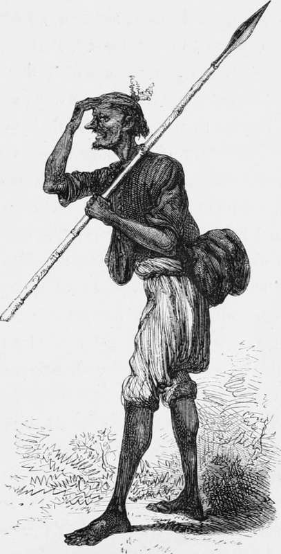

Old " Natta," the hunt shikaree. His appearance in clerical costume
Description
This section is from the book "Hog Hunting In The East, And Other Sports", by J. T. Newall. Also available from Amazon: Hog Hunting in the East, and Other Sports.
Old " Natta," the hunt shikaree. His appearance in clerical costume
It was none less than "Natta," the great Cutch shikaree. The renowned tracker whose experience had for a score of years and more assisted the sahib logue to find their game. Trained to his work under the eye of several good old sportsmen, Natta was unsurpassed, if not unequalled in his craft.
Thy shade, old man, arises before me as I write ! Though years have flown since thou wert gathered to thy fathers, thy fame yet lives. Perhaps thy spirit haunts those hunting-grounds which thy bodily presence so often graced. But let me depict thee, not as a spectre, but as thou wast in the flesh, little though thou didst ever carry of that superfluous article !#
Norman, as the sahib under whose immediate orders he considered himself, was the first who was honoured with the old hunter's notice. With a serene gravity, he accomplished the usual Oriental salutation, which was afterwards extended in a general sweeping fashion to the remainder of the company. Nor w^as his salaam in any way disturbed by the laughter which greeted his, it must be confessed, somewhat peculiar costume and appearance.
Natta, the shikaree, in clerical costume
He had on this occasion arrayed himself in his newest coat the last present of cast-off clothing which gentlemen were in the* habit of occasionally bestowing on him. Many of different sizes, cuts, and patterns had on various occasions graced his person; but it remained for this to present him to the gaze of an appreciative and admiring company clad in the habiliments of a parson, and a parson, moreover, of large dimensions. Such indeed was the singular looking black coat which, buttoned at the neck and down the front, and hanging like a bag about Natta's thin, spare frame, was gathered around his loins by the skirts, the ends of which were, with considerable ingenuity, inserted amongst the folds of the kummurbund. Over this it lapped in many places, and especially protruded in the rear, taking there the appearance of a thick black tail.
* Appendix, Note D.
Below this were the loose, baggy trousers peculiar to Cutch. Gathered in at the waist in many plaits, they fell with the ample seat as low as the bend of the knee, just below which they were gathered in tight and fastened. This left the long, thin, black shanks, with their pedestals a pair of most gigantic feet fully exposed in all their dark and sinewy nakedness. The contrast between the attenuated lee; and the disproportionate length and breadth of the base on which it rested was ridiculous in the extreme. Feet certainly was the term by which the vulgar spoke of those remarkable extremities, but a new word would have to be coined rightly to describe them, or give an adequate idea of their appearance and dimensions. They were very long, very broad, very flat, and very knobbed. Horny, bulbous lumps stuck out in unexpected places, representing possibly the spot where, in more tender days, a thorn had penetrated, or a boil run its course. The thick integument which soled these hoofs was now of a consistency so tough, as to defy the common order of thorns or sharp stones.
The toes were very long and bony, and seemed to grip or bite the ground as the owner walked. They could with ease grasp a stick at their master's option, and convey it to his hand, thus obviating the necessity of stooping. Natta's great endurance and ability to sustain prolonged fatigue was attributed by himself and friends to the possession of these feet, which were in consequence the pride of himself, and envy and admiration of others.
The calf of the leg was represented by a small swelling resembling a bundle of whip-cord, various dependent strands of which laced the leg till lost in the foot.
The voluminous article of dress in which his upper frame was enveloped, in a measure disguised its proportions ; but enough could be discerned to show that the shoulders were very narrow, and the chest flat, but the arms long and sinewy.
His face was thin, puckered, and hatchet-like, with hollow cheeks and protuberant cheek-bones, and of a tint generally approaching a medium shade of Indian ink, pleasingly relieved by patches of a light sepia or dark mahogany colour. Constant exposure, long-sustained fatigue, and strong drink had assisted advancing age in scoring the rugged countenance with lines both deep and harsh, and giving a bleary dimness to the eye. The head was supported by a neck, * long, pinched, and weazeny, and was surmounted by a somewhat worn and ragged puggree, from the sides of which a few straggling grey hairs escaped. In it were stuck a few peacock's feathers. With this for a crest, his appearance was not unlike that of a gigantic crane.
Within the folds of his kummurbund, or waistcloth, was inserted a hunting-knife ; and in the recesses both of it and of his puggree, could the contents have been disclosed, would doubtless have been discovered small quantities of tobacco, coppers, a flint and steel, with cotton match inserted in a hollow tube, a piece of opium, and other marching necessaries. The pipe and slippers, which on the march would have been carried either in the hand, or inserted between the folds of the kummurbund, now lay beside a log in front of a fire at a little distance, where the arrival of the sahibs had disturbed him in the enjoyment of a quiet smoke.
The horsemen soon dismounted and gathered round the tall form of old Natta, with the object both of hearing the khubber and examining more closely the singular habiliments in which it had pleased him to appear. The old man himself seemed to be quite unconscious of anything unusual in the nature of his dress, or that he was more than commonly an object of admiring wonder. A coat was a coat to him of whatever colour, fashion, or texture. The only inconvenience he felt in that at present worn, was the absence of upper side-pockets.
Continue to: